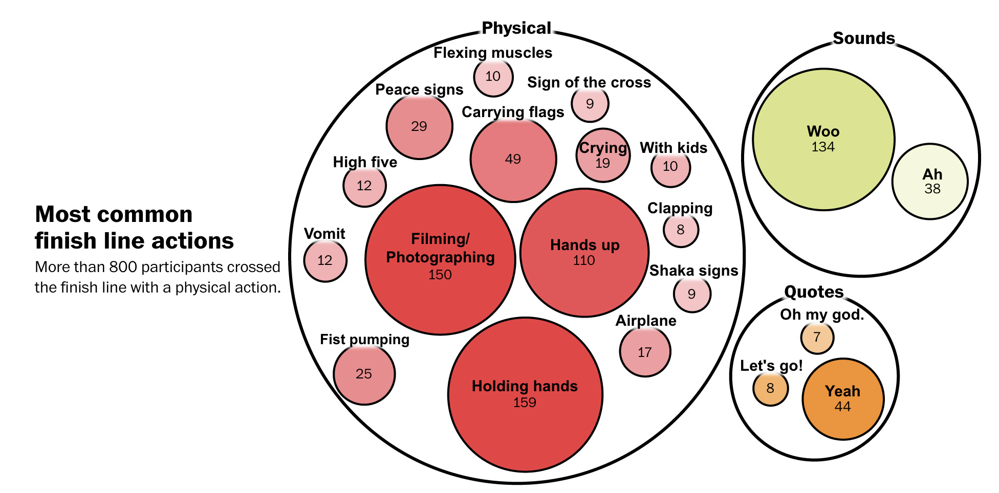
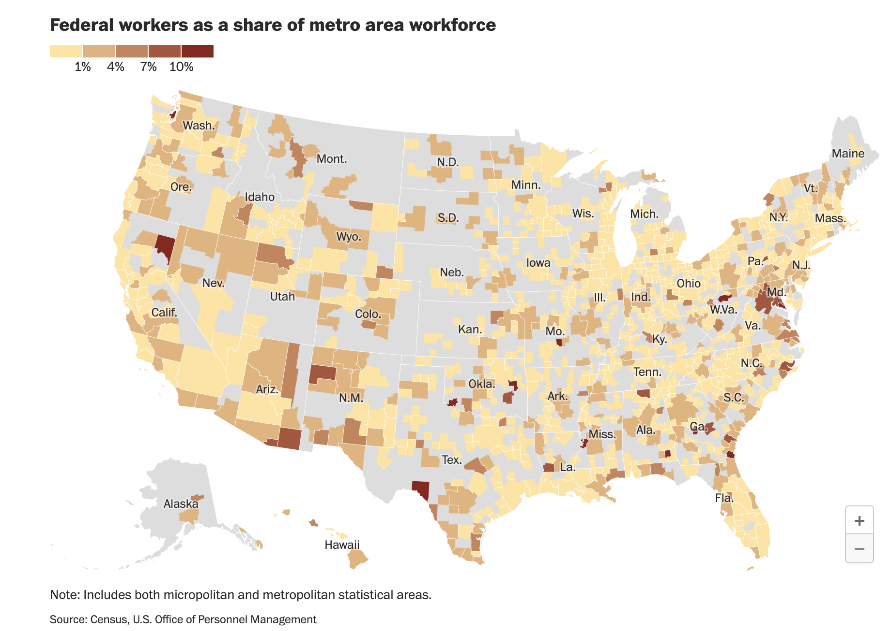
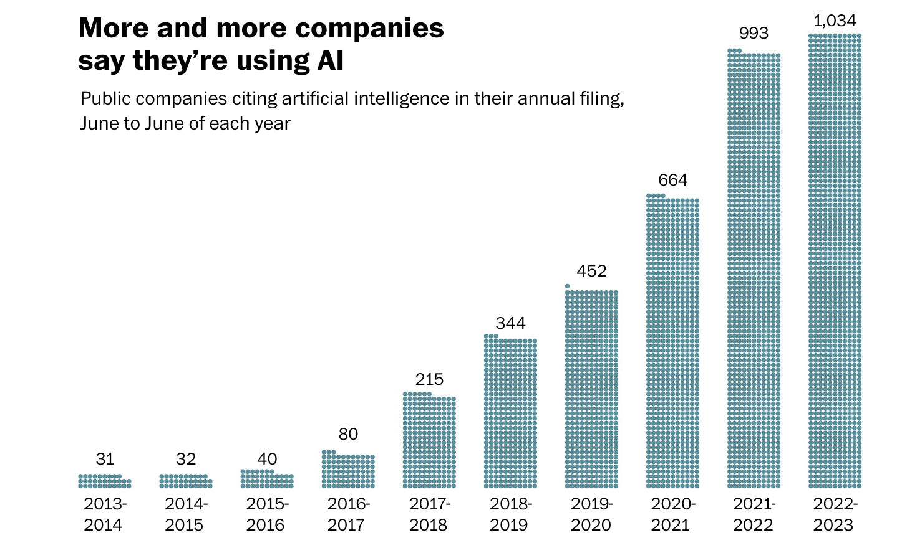

Hanna Zakharenko
home
resume
portfolio
contact
The Washington Post (some 🎁 links)
Highlights are marked
🌟like this
Bylines
Exit poll results from Ohio Issue 1 ballot measure on abortion rights
🌟 What happens when runners cross a marathon finish line? We’ve got data.

See where UAW workers are striking
🌟 See where federal workers live in the U.S.

How each House member voted for Mike Johnson as speaker
Who voted against Jim Jordan for speaker?
Here’s who works and who is furloughed during a government shutdown
Tracking the path of Tropical Storm Idalia
🌟 AI is so hot even KFC and Williams-Sonoma execs are talking about it

Without Trump, Republican debate attacks focus on Ramaswamy and Biden
Rent is finally cooling. See how much prices have changed in your area.
Alcohol consumption surged during the pandemic — and deaths followed
Here’s how to get around D.C. during Fourth of July celebrations
Remote work appears to be here to stay, especially for women
Graphics contributions
Runaway zebras delighted the nation — and exposed their owner’s dark past
Coordinated ‘swatting’ effort may be behind hundreds of school shooting hoaxes
American democracy is cracking. These forces help explain why.
Addicted to cool
🐢 The Diamondback
From voice assistants to algorithms, the UMD community uses AI in unique ways
Unifursity Furries creates a safe, welcoming space for UMD furries
Wordle Wars: UMD students on the popular word game and friendly competition
💻 Personal projects and class projects
Exploring how tip credits affect restaurant workers
Acadmeic paper - How Interesting Is This To You: Rating the Interestingness of Auditory Clips
UX case study: SportsCourts